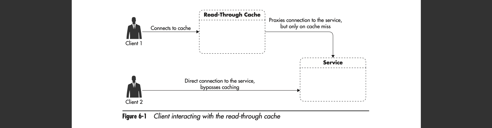
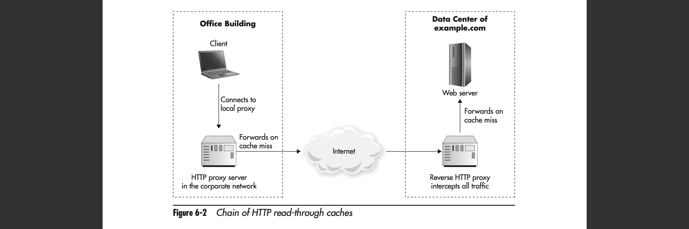
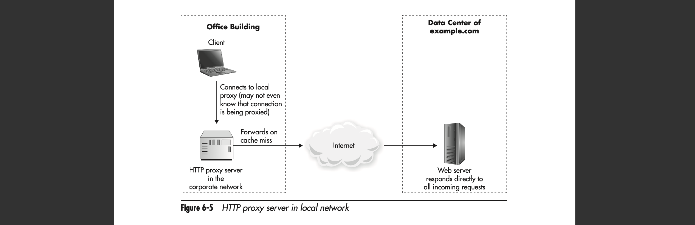
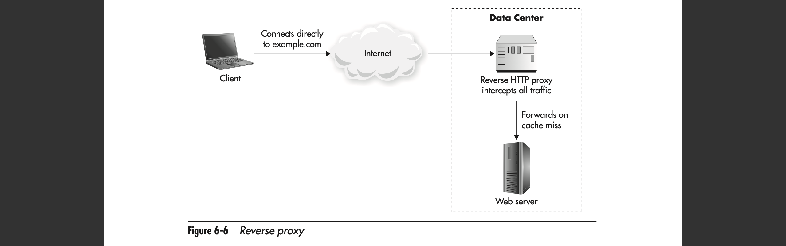
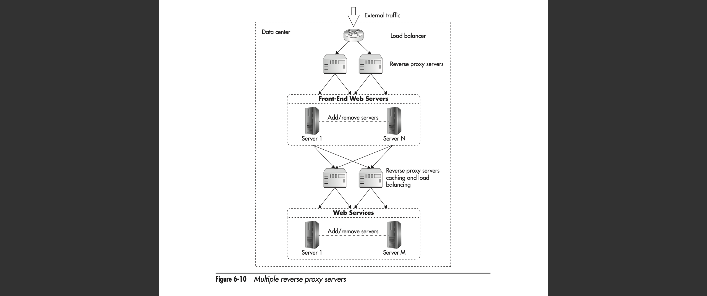
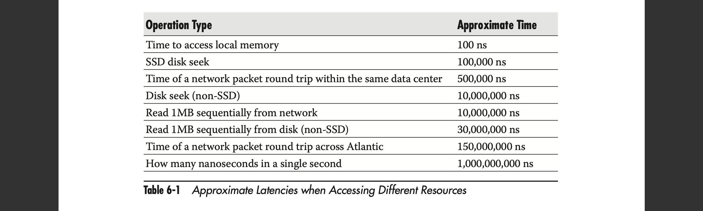
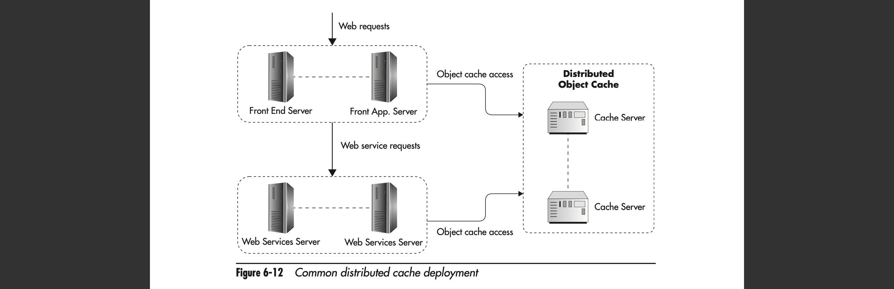
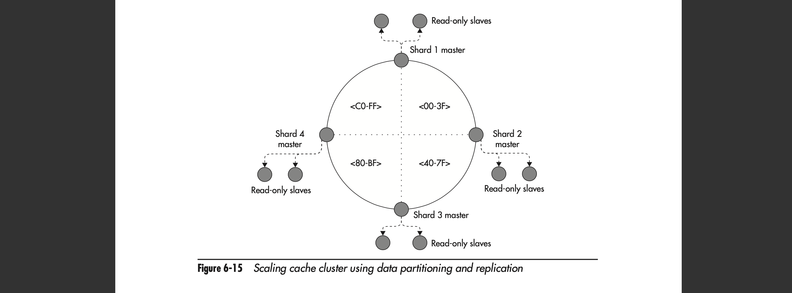
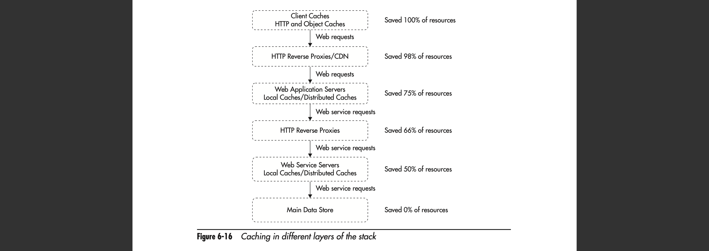

“The supreme art of war is to subdue the enemy without fighting.”
– Sun Tzu
Cache Hit Ratio
Cache effectiveness depends on how many times you can reuse the same cached response
Three Factors
Cache key space, the number of all possible cache keys that your application could generate (all of the possible cache, the less the better more percentage can be cached more hits)
The number of items that you can store in your cache before running out of space
How long, on average, each object can be stored in cache beforeexpiring or being invalidated
Time to Live (TTL), data is valid for this amount of time
15 minutes maybe ok for weather forecast, not in other dynamic situations
Caching Based on HTTP
Read-through cache is a caching component that can return cached resources or fetch the data for the client, if the request cannot be satisfied from cache (Client doesn’t connect to the service directly)

It is common to see multiple HTTP read-through caches chained to one another in a single web request without the client ever being aware of it.

HTTP Caching Headers
Some headers have over-lapping functions (Cache-control header max-age, Expires header), decide which headers you want to use and sticking to them
Cache-Control header
private
The result is specific to the user who requested it
Only browsers will be able to cache this response because intermediate caches would not have the knowledge of what identifies a user.
public
The response can be shared between users as long as it has not expired
no-store
The response should not be stored on disks by any of the intermediate caches. (sensitive user information)
no-cache
The response should not be cached. (Cache needs to ask the server whether the data is valid every time)
max-age
How many seconds this response can be served from the cache before becoming stale (it defines the TTL of the response)
Less backward-compatible, tends to cause inconsistency (Don’t recommend using)
no-transform
The response should be servedwithout any modifications
A content delivery network (CDN) provider might transcode images to reduce their size, lowering the quality or changing the compression algorithm.
must-revalidate
Once the response becomes stale, it cannot be returned to clients without revalidation.
Although it may seem odd, caches may return stale objects under certain conditions
If the client explicitly allows it
If the cache loses connection to the origin server.
Expires header
Specify an absolute point in time when the object becomes stale
Expires: Sat, 23 Jul 2015 13:14:28 GMT
Vary header
Tell caches that you may need to generate multiple variations of the response based on some HTTP request headers.
Vary: Accept-Encoding
Some other headers
Age, Last-Modified, If-Modified-Since, and Etag
Examples
Static files that can be cached for a really long time
Cache static files under unique URL, users who have older versions of HTML can still access old URL files
Never stored, cached, or reused for any users.
User-specific data
Cached for 10 minutes
HTML meta-tags for cache control (avoid these meta-tags altogether, as they do not work for intermediate caches and they may be a source of confusion)
Types of HTTP Cache Technologies
Browser Cache
Browsers have built-in caching capabilities to reduce the number of requests sent out.
Usually implemented using a combination of memory and local files
Caching Proxy
A caching proxy is a server, usually installed in a local corporate network or by the Internet service provider (ISP).
It is a read-through cache used to reduce the amount of traffic generated by the users of the network by reusing responses between users of the network
The larger the network, the larger the potential saving

Reverse Proxy
Place a reverse proxy in your own data center to reduce the load put on your own web servers
You can override HTTP headers and better control which requests are being cached and for how long

Content Delivery Networks
A content delivery network (CDN) is a distributed network of cache servers that work in a similar way as caching proxies.
Web applications would typically use CDN to cache their static files like images, CSS, JavaScript, videos, or Portable Document File (PDF) documents.
Creating a “static” subdomain (for example, s.example.org)
Generating URLs for all of your static files using this domain
Configure the CDN provider to accept these requests on your behalf and point DNS for s.example.org to the CDN provider.
Any time CDN fails to serve a piece of content from its cache, it forwards the request to your web servers (origin servers) and caches the response for subsequent users.
You can also configure some CDN providers to serve both static and dynamic content
Mitigate distributed denial of service attacks (DDoS) (as CloudFlare does)
Further reduction of web requests sent to your origin servers
Scaling HTTP Caches (Only reverse proxy as others are out of your control)
Hardware or open source software (Nginx, Varnish, Squid, Apache mod_proxy, and Apache Traffic Server)
Should be enough for your startup, handle more than 10,000 requests per second from a single machine
Focus on cache hit ratio instead of scale reverse proxies
The same three factors
Cache key space, Describes how many distinct URLs your reverse proxies will observe in a period of time (let’s say in an hour)
The more distinct URLs are served, the more memory or storage you need on each reverse proxy to be able to serve a significant portion of traffic from cache.
Average response TTL, Describes how long each response can be cached.
The longer you cache objects, the more chance you have to reuse them.
Do not have to worry much about cache servers becoming full by setting a long TTL, as in-memory caches use algorithms designed to evict rarely accessed objects and reclaim space
The most commonly used algorithm is Least Recently Used (LRU)
Average size of cached object, Affects how much memory or storage your reverse proxies will need to be able to store the most commonly accessed objects.
“Shrink” the objects
CSS files and JavaScript files can be minified
HTML can be preprocessed to remove redundant white spaces and comments during the template-rendering phase
Reaching concurrency limit or throughput limit
Deploying multiple reverse proxies in parallel and distributing traffic among them

Caching Application Objects
They are cache-aside rather than read-through caches
The application needs to be aware of the existence of the object cache, and it actively uses it to store and retrieve objects rather than the cache being transparently positioned between the application and its data sources
Common Types of Object Caches
Client-Side Caches
Store application data directly on the user’s device
It is isolated from your data center, which makes it impossible for your servers to remove/invalidate cached objects directly
Anytime you use web storage or similar client-side storage, you need to include the code responsible for cache refresh and invalidation in your front-end JavaScript code
Caches Co-located with Code
located directly on your web servers
Local cache is usually implemented in one of the following ways:
Objects are cached directly in the application’s memory
Objects are stored in shared memory segments so that multiple processes running on the same machine could access them
A caching server is deployed on each web server as a separate application
The application can also talk to an external caching server
Challenge (Why it is not recommended)
Since cache is not synced across servers and request can come to all servers, many memory is wasted to cache the same data
It is not clear where the cache lives to invalidate data, because it may live in many servers

Distributed Object Caches (Redis, Memcached)
The main difference between this type and local server cache is that interacting with a distributed object cache usually requires a network round trip to the cache server
Most caching servers have client libraries for all common programming language
Efficiently remove objects from the cache, allowing for cache invalidation on source data changes (connect to your cache and request object removal)
Deployment

Challenge
Adding distributed cache, adds a certain amount of complexity and management overhead
Redis is a very efficient cache server, and a single machine can support tens of thousands of operations per second, allowing you to grow to reasonable traffic without the need to scale it at all.
As long as throughput is not a problem, scale vertically first by adding more memory
Scaling Distributed Object Caches
Data partition
Memcached with libMemcached client library
By declaring a Memcached cluster, your data will be automatically distributed among the cache servers using a consistent hashing algorithm
Server sits in a hash ring with equal distance because the size of cache is pre-determined
Adding a server
With replication

Hosting
Amazon, you could either deploy your own caching servers on EC2 instances or use Amazon Elastic Cache
You will still need to distribute the load across the cache servers in your client code because Elastic Cache does not add transparent partitioning or automatic scalability
Azure lets you deploy a managed Redis instance with replication and automatic failover in a matter of a few clicks
Caching Rules of Thumb
Cache High Up the Call Stack

Reuse Cache Among Users
Think about how you could make you cache more usable for other users
The second one is better, as rounding does not influence restaurants in the area by much (as long as the rounding is correct) and able to cache the result for more requests
Where to Start Caching?
Prioritize based on a strict and simple metric
Aggregated time spent = time spent per request * number of requests
which pages (or resources) are the most valuable when it comes to caching
Google Analytics report and correlated traffic stats for the top 20 pages with the average time needed to render each of these pages.
Cache Invalidation Is Difficult
Cache invalidation is difficult because cached objects are usually a result of computation that takes multiple data sources as its input.
That, in turn, means that whenever any of these data sources changes, you should invalidate all of the cached objects that have used it as input.
To make it even more difficult, each piece of content may have multiple representations, in which case all of them would have to be removed from cache
The best alternative to cache invalidation is to set a short TTL on your cached objects so that data will not be stale for too long
Not always sufficient
Although cache invalidation algorithms are interesting to learn, I do not recommend implementing them unless absolutely necessary. I recommend avoiding cache invalidation altogether
In most cases, short TTL or a hybrid solution, where you load critical data on the fly, is enough to satisfy the business needs.